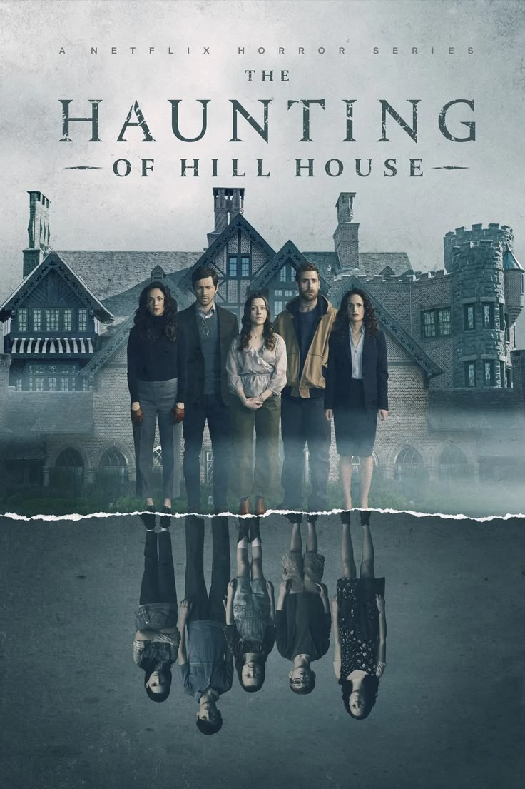
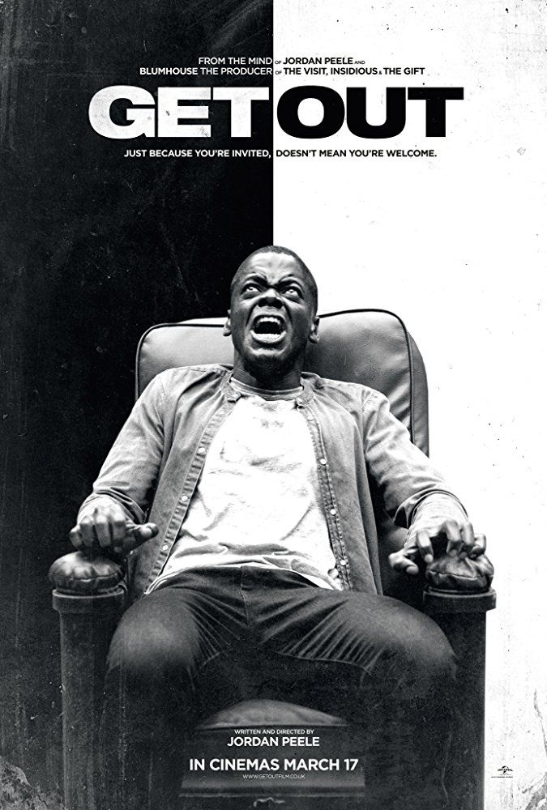
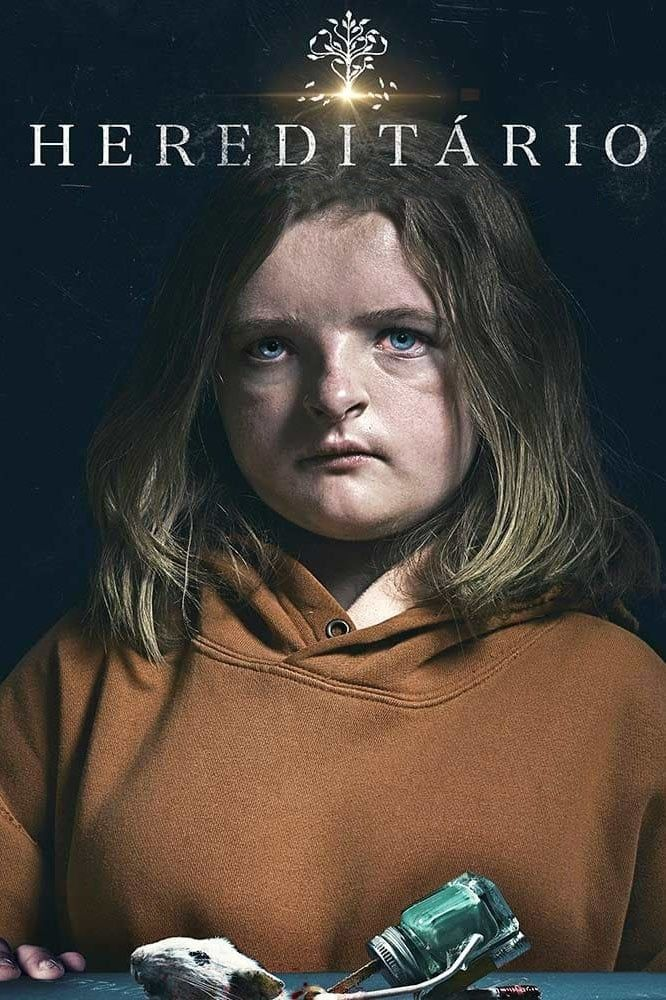
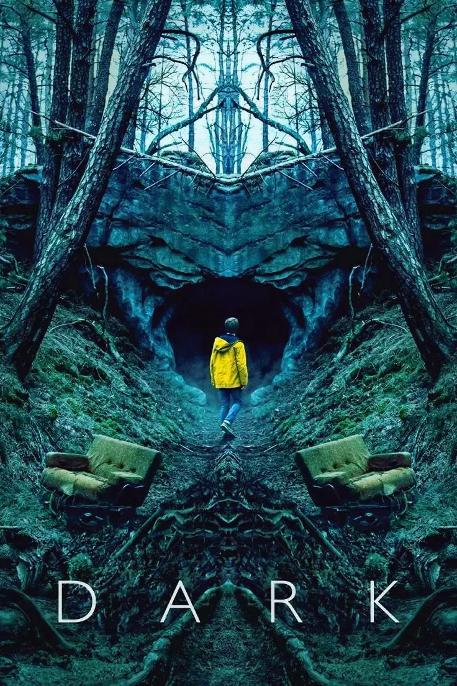
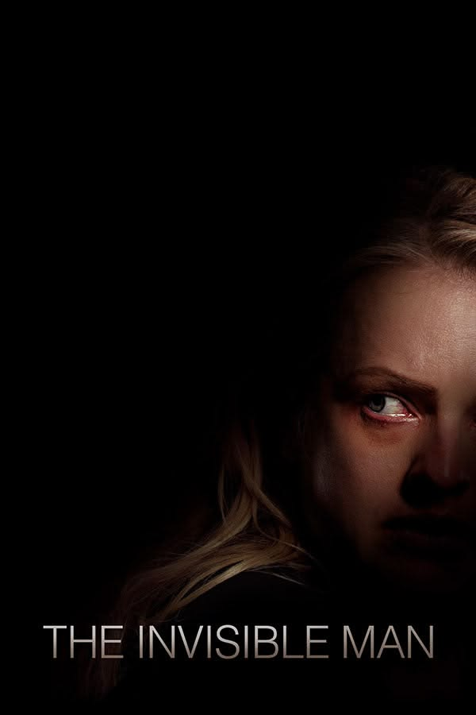
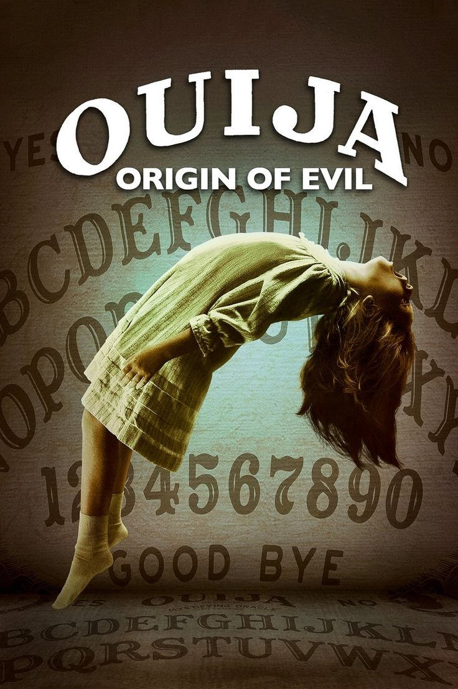

O Que Tenho Assistido
Abaixo estão as obras de suspense e terror que marcaram minha rotina, com as capas e minhas notas.

Nota: 9/10 ⭐A Maldição da Residência Hill
Mistura perfeita de terror psicológico com drama familiar. A ambientação prende do início ao fim.

Nota: 10/10 ⭐Corra!
Roteiro genial. A forma como o suspense é construído te deixa grudado na tela, sem saber em quem confiar.

Nota: 8/10 ⭐Hereditário
Um terror desconfortável. Atuação brilhante que mexe com a cabeça e tem um final surpreendente.

Nota: 9/10 ⭐Dark (Série)
Uma série complexa que exige muita atenção, mas recompensa cada segundo. O clima sombrio e os mistérios de dar nó na cabeça são perfeitos.

Nota: 8/10 ⭐O Homem Invisível
A angústia deste filme é palpável. A direção consegue criar uma atmosfera onde você passa a ter medo dos espaços vazios na tela.

Nota: 8.5/10 ⭐Ouija: Origem do Mal
Uma grata surpresa! Uma ambientação de época incrível, personagens muito bem desenvolvidos e sustos genuínos e bem construídos.
 Nota: 7.5/10 ⭐
Nota: 7.5/10 ⭐
Verdade ou Desafio
Um suspense muito divertido e tenso. A premissa é super criativa e consegue prender a atenção até o final com as reviravoltas.